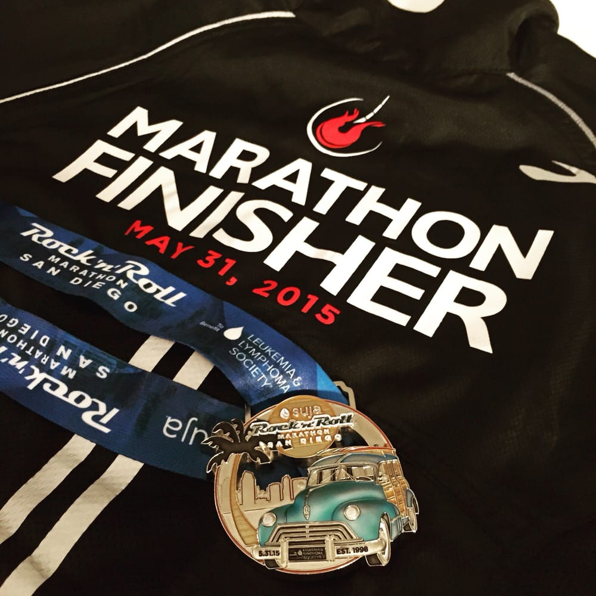
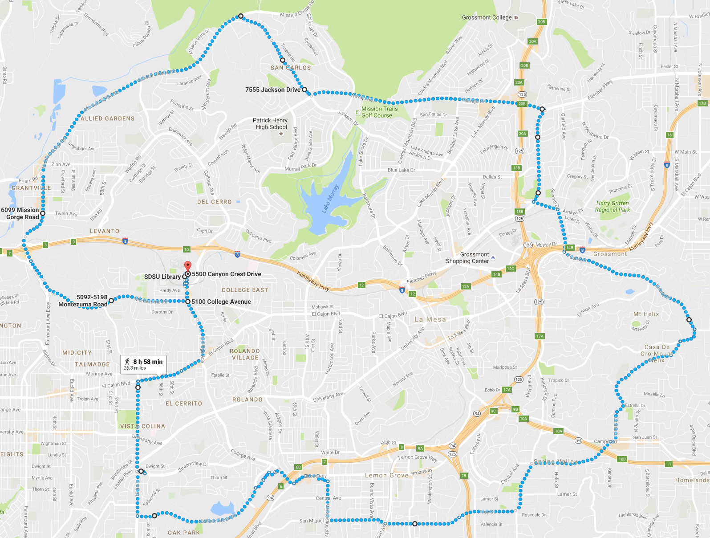

SDSU MARATHON
SUNDAY DECEMBER 4th 2016
About the Race
Come celebrate San Diego State University's full marathon with us at the SDSU Campus. We invite you to join us in 20th year of running this event. The race will be a full 26 mile marathon that will begin from the SDSU Love Library at 8AM on Sunday, December 4th. Participants may register for this event by clicking the link found on this page.
Race Day
Rules
- Entry fees are non-refundable and non-transferable. No exceptions.
- Once we receive and accept your entry, you will not receive a refund if you cannot participate, you may not give or sell your race number to anyone else, and you may not transfer your entry fee to future races.
- If you attempt to sell your race number, you may be banned from future Competitor Group events for three years.
- You must be at least 12 years old to participate in the Marathon.
- You must be in good health and physically prepared to take on the challenge of a full 26 mile Marathon.
- You must show photo ID to receive your race number and timing chip.
- You must pick up your own race packet and race number at the SDSU Bookstore.
- No coaches, bikes, in-line skates, skateboards, baby joggers or dogs will be allowed on the course.
Parking and Transportation
There will be limited parking during this event on the SDSU Campus. Please visit the SDSU Parking webpage for information on parking and location. Due to the nature of this event, we expect a greater number of participants than there are available parking spots. We recommend that participants before 6AM to ensure sufficient time to find parking and obtain their race number and timing chip.
Baggage Check
Before you enter your assigned corral, drop-off your pre-race/post-race clothing and belongings at the Gear Check. While you run, your gear will be held at Gear Check. Each participant will receive a large, durable gear bag at the SDSU Bookstore when you pick up your packet that will serve as your gear bag on race day. Gear Check trucks will be arranged alphabetically and by truck number near the Start Line. Attach your gear tag to your gear bag before you leave it with the Gear Check crew. After the race, reclaim your checked bag at the designated Gear Check area. Please note: DO NOT leave valuables, cash or jewelry in your gear bag. The event is not responsible for any lost items. Gear bags must be claimed before close of the Finish Line Festival on race day.
Route
REGISTRATION
Registration is now open with limited time and spots available. Hurry and come reserve your spot today! Registering is easy! Click on the Registration link at the top of the page and fill out the appropriate form.